生成图像我们使用TGAImage，这个使用起来很简单：
#include "tgaimage.h"
const TGAColor white = TGAColor(255, 255, 255, 255);
const TGAColor red = TGAColor(255, 0, 0, 255);
int main(int argc, char** argv){
TGAImage image(100, 100, TGAImage::RGB);
image.set(52, 41, red);
image.flip_vertically(); // i want to have the origin at the left bottom corner of the image
image.write_tga_file("output.tga");
return 0;
}生成的图像（注意中间哪一个小小的红色点）：
compile：
g++ main.cpp tgaimage.cpp -o main然后我们来学习一种3d格式文件，wavefront obj file:
# List of geometric vertices, with (x, y, z [,w]) coordinates, w is optional and defaults to 1.0.
v 0.123 0.234 0.345 1.0
v ...
...
# List of texture coordinates, in (u, [v ,w]) coordinates, these will vary between 0 and 1, v and w are optional and default to 0.
vt 0.500 1 [0]
vt ...
...
# List of vertex normals in (x,y,z) form; normals might not be unit vectors.
vn 0.707 0.000 0.707
vn ...
...
# Parameter space vertices in ( u [,v] [,w] ) form; free form geometry statement ( see below )
vp 0.310000 3.210000 2.100000
vp ...
...
# Polygonal face element (see below)
f 1 2 3
f 3/1 4/2 5/3
f 6/4/1 3/5/3 7/6/5
f 7//1 8//2 9//3
f ...
...
# Line element (see below)
l 5 8 1 2 4 9我们现在只需要知道了解顶点是v，现在我们想把一个文件中的3d模型的顶点 v (x, y, z) 给画出来，（因为我们已经知道怎么在图上相应的位置放像素）这个文件所有的 x, y, z ∈ [-1, 1]，所以我们
image.set(52, 41, red);, 这里的 52 和 41 是 int，映射之后需要转成int，因为我们总是画在一个一个像素点上。写一个简单的parser读入文件建立模型，画之。
核心部分长这样：
for (int i = 0; i != model->nverts(); i++) {
Vec3f v = model->vert(i);
Vec2i p = world2screen(v);
image.set(p.x, p.y, white);
}
compile:
g++ main.cpp tgaimage.cpp model.cpp -o main画完了点，我们来开始画线。画线的同时我们依旧要记得，我们是画在一个一个整数的pixel上。
void line(int x0, int y0, int x1, int y1, TGAImage &image, TGAColor color) {
for (float t=0.; t<1.; t+=.01) {
int x = x0 + (x1-x0)*t;
int y = y0 + (y1-y0)*t;
image.set(x, y, color);
}
}这里的问题有两个：
t取大了画出来的并不是线，而是一堆点。t取小了会浪费，有很多重复的x和y。
void line(int x0, int y0, int x1, int y1, TGAImage &image, TGAColor color) {
for (int x=x0; x<=x1; x++) {
float t = (x-x0)/(float)(x1-x0);
int y = y0 + (y1 - y0)*t;
image.set(x, y, color);
}
}我们想着要节约，就每次 x 增加1，然后来画y。
这样画线是对的因为我们假设 \(y = mx + b \), 直线斜率m， 截距b
\[ \frac{y_1 - y_0}{x_1 - x_0} = m \]
\[ y_0 = mx_0 + b \]
\[ y = y_0 + \frac{y_1 - y_0}{x_1 - x_0}(x - x_0) \]
所以
\[ y = y_0 + mx - mx_0 = mx + (y_0 - mx_0) = mx + b \]
同时它的问题是我们也已经指出:
所以想法是：
看代码：
void line(int x0, int y0, int x1, int y1, TGAImage &image, TGAColor color) {
bool steep = false;
if (std::abs(x0-x1)<std::abs(y0-y1)) { // if the line is steep, we transpose the image
std::swap(x0, y0);
std::swap(x1, y1);
steep = true;
}
if (x0>x1) { // make it left−to−right
std::swap(x0, x1);
std::swap(y0, y1);
}
for (int x=x0; x<=x1; x++) {
float t = (x-x0)/(float)(x1-x0);
int y = y0 + (y1 - y0)*t;
if (steep) {
image.set(y, x, color); // if transposed, de−transpose
} else {
image.set(x, y, color);
}
}
}这样就可以完善上述出现的问题来画线了。
这里其实还是有一些可以进步的空间，比如出现了浮点数t，同时也依旧我们之前说的我们只需要画在整数上。可以参见：
再谈绘制直线中的优化部分。
不过我们画线就暂时停在这里。我们就用这个函数来画了，因为compiler的优化已经足够好了。
之前我们已经用过这个文件，上次我们认识了v 代表顶点（vertex),这次我们来多认识一个f 代表面（face)，实际上是三角形面，在这个文件中我们的一行f有：
f 1193/1240/1193 1180/1227/1180 1179/1226/1179我们现在只需要知道每组的第一个数字： 1193,1180,1179 是代表vertex list中的三个顶点的索引（index），这三个顶点构成一个三角形。
所以进一步修改model parser，我们来用这个画出线框，核心代码长这样：
for (int i = 0; i < model->nfaces(); i++) {
std::vector<int> face = model->face(i);
// face: i0,i1,i2 of triangle
for (int j = 0; j < 3; j++) {
Vec3f v0 = model->vert(face[j]);
// this % used for when j = 2 to get i2, i0
Vec3f v1 = model->vert(face[(j+1)%3]);
int x0 = (v0.x+1.)*width/2.;
int y0 = (v0.y+1.)*height/2.;
int x1 = (v1.x+1.)*width/2.;
int y1 = (v1.y+1.)*height/2.;
line(x0, y0, x1, y1, image, white);
}
}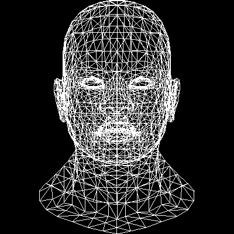
looks good.
compile
g++ -std=c++11 main.cpp tgaimage.cpp model.cpp -o main来复习一下画线,我们知道画线的时候我们做的实际上是这样的事情：对于要画的线AB，在满足我们设定的条件（斜率 ≤ 1, A < B）之后，因为我们要画的是整数的像素点，对于x每增加1，我们算出对应的y，然后来画点（x，y），这样重复直到x增加到B点：
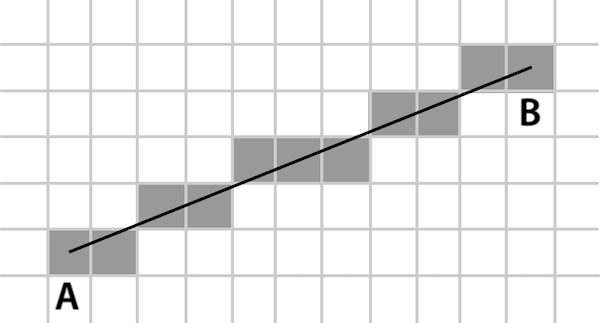
对于 AB 上的任意一点 P 满足：
\[ P = A + t(B - A), 0 \le t \le 1 \]
也可以写成：
\[ P = (1 - t)A + tB , 0 \le t \le 1 \]
这个公式是著名的线性插值，实际上也是我们画线的基础。因为在画线部分核心代码长这样：
for (int x=x0; x<=x1; x++) {
float t = (x-x0)/(float)(x1-x0);
int y = y0 + (y1 - y0)*t;
...
}对于P点，我们根据增加后的x算出t值，然后算出y，得到应该画的点。
其实在画框架的时候我们已经画过三角形了，就画三条线就OK。现在我们要做的是来填充三角形。
若要填充一个三角形，最简单的能想到的办法是对于三角形的每一个y，我们找到对应的左侧和右侧，x_left和x_right，我们画上x_left到x_right的线，那么从三角形最上面的点按y增加扫到最下面的点既可。
为了简单起见，我们先把三角形拆成上下两部分：

那么对于一个特定的y，我们想要找到它的左边和右边 A B 两点，思路是这样：
这样就能算出对应的 A 和 B
void triangle(Vec2i t0, Vec2i t1, Vec2i t2, TGAImage &image, TGAColor color) {
// sort the vertices, t0, t1, t2 lower−to−upper (bubblesort yay!)
if (t0.y>t1.y) std::swap(t0, t1);
if (t0.y>t2.y) std::swap(t0, t2);
if (t1.y>t2.y) std::swap(t1, t2);
int total_height = t2.y-t0.y;
for (int y=t0.y; y<=t1.y; y++) {
int segment_height = t1.y-t0.y+1;
float alpha = (float)(y-t0.y)/total_height;
float beta = (float)(y-t0.y)/segment_height; // be careful with divisions by zero
Vec2i A = t0 + (t2-t0)*alpha;
Vec2i B = t0 + (t1-t0)*beta;
image.set(A.x, y, red);
image.set(B.x, y, green);
}
}
那么有了 A 和 B 之后，我们在AB之间调用我们的画线函数，再用同样的方法给下半部分填满，问题既解决。
void triangle(Vec2i t0, Vec2i t1, Vec2i t2, TGAImage &image, TGAColor color) {
// sort the vertices, t0, t1, t2 lower−to−upper (bubblesort yay!)
if (t0.y>t1.y) std::swap(t0, t1);
if (t0.y>t2.y) std::swap(t0, t2);
if (t1.y>t2.y) std::swap(t1, t2);
int total_height = t2.y-t0.y;
for (int y=t0.y; y<=t1.y; y++) {
int segment_height = t1.y-t0.y+1;
float alpha = (float)(y-t0.y)/total_height;
float beta = (float)(y-t0.y)/segment_height; // be careful with divisions by zero
Vec2i A = t0 + (t2-t0)*alpha;
Vec2i B = t0 + (t1-t0)*beta;
if (A.x>B.x) std::swap(A, B);
for (int j=A.x; j<=B.x; j++) {
image.set(j, y, color); // attention, due to int casts t0.y+i != A.y
}
}
for (int y=t1.y; y<=t2.y; y++) {
int segment_height = t2.y-t1.y+1;
float alpha = (float)(y-t0.y)/total_height;
float beta = (float)(y-t1.y)/segment_height; // be careful with divisions by zero
Vec2i A = t0 + (t2-t0)*alpha;
Vec2i B = t1 + (t2-t1)*beta;
if (A.x>B.x) std::swap(A, B);
for (int j=A.x; j<=B.x; j++) {
image.set(j, y, color); // attention, due to int casts t0.y+i != A.y
}
}
}这样三角形填充就解决。代码里有很多重复的部分，然后这里决定让代码短一点，代价是读起来没那么清楚了：
void triangle(Vec2i t0, Vec2i t1, Vec2i t2, TGAImage &image, TGAColor color) {
if (t0.y==t1.y && t0.y==t2.y) return; // I dont care about degenerate triangles
// sort the vertices, t0, t1, t2 lower−to−upper (bubblesort yay!)
if (t0.y>t1.y) std::swap(t0, t1);
if (t0.y>t2.y) std::swap(t0, t2);
if (t1.y>t2.y) std::swap(t1, t2);
int total_height = t2.y-t0.y;
for (int i=0; i<total_height; i++) {
bool second_half = i>t1.y-t0.y || t1.y==t0.y;
int segment_height = second_half ? t2.y-t1.y : t1.y-t0.y;
float alpha = (float)i/total_height;
float beta = (float)(i-(second_half ? t1.y-t0.y : 0))/segment_height; // be careful: with above conditions no division by zero here
Vec2i A = t0 + (t2-t0)*alpha;
Vec2i B = second_half ? t1 + (t2-t1)*beta : t0 + (t1-t0)*beta;
if (A.x>B.x) std::swap(A, B);
for (int j=A.x; j<=B.x; j++) {
image.set(j, t0.y+i, color); // attention, due to int casts t0.y+i != A.y
}
}
}上一章我们画了框架，这下我们来填上三角形：

好吧，并不是很动人=。=之所以不动人是因为光影光影，我们只有颜色，没有考虑光，
compile:
g++ -std=c++11 main.cpp tgaimage.cpp model.cpp -o main除了上面提到的扫描法之外，另外一个可以想到的办法是，因为我们终究是画到二维平面上的像素，一个一个的点，那么对于我们要画的区域内的每一个点，我们是否可以检测看它是否在三角形之内，如果是的话，画它，否则不理之。这样的思路是可行的，对于三角形内及其边上的任意一点，我们都可以用重心坐标系来表示：
\[ P = (1 - u - v)A + uB + vC, 0 \le u,v \le 1 \]
这个长得也很像线性插值。
运算:
\[ P = A + u\overrightarrow{AB} + v\overrightarrow{AC} \]
继续：
\[ u\overrightarrow{AB} + v\overrightarrow{AC} + \overrightarrow{PA} = 0 \]
PA是AB和AC的线性组合。
拆一拆：
\[ u\overrightarrow{AB}_x + v\overrightarrow{AC}_x + \overrightarrow{PA}_x = 0 \]
\[ u\overrightarrow{AB}_y + v\overrightarrow{AC}_y + \overrightarrow{PA}_y = 0 \]
实际上我们都可以看做是我们在寻找向量 \((u, v, 1)\) 同时垂直于向量 \((\overrightarrow{AB}_x, \overrightarrow{AC}_x,\overrightarrow{PA}_x)\) 和向量 \((\overrightarrow{AB}_y, \overrightarrow{AC}_y,\overrightarrow{PA}_y)\)。 这就是叉乘。
xvector = (B_x - A_x, C_x - A_x, A_x - P_x)
yvector = (B_y - A_y, C_y - A_y, A_y - P_y)
u = xvector x yvector
# 如果 u 的 z 分量不等于1则说明P点不在三角形内因为我们的计算有浮点数，可能u的z分量不会一定等于1,令 u 的三个分量是 (a, b, c),我们代入原式子：
\[ a\overrightarrow{AB} + b\overrightarrow{AC} + c\overrightarrow{PA} = 0 \]
\[ P = (1 - a/c - b/c)A + a/cB + b/cC, c \ne 0 \]
代码我们这样写：
Vec3f barycentric(Vec2f A, Vec2f B, Vec2f C, Vec2f P) {
Vec3f s[2];
for (int i=2; i--; ) {
s[i][0] = C[i]-A[i];
s[i][1] = B[i]-A[i];
s[i][2] = A[i]-P[i];
}
Vec3f u = cross(s[0], s[1]);
if (std::abs(u[2])>1e-2) // dont forget that u[2] is integer. If it is zero then triangle ABC is degenerate
return Vec3f(1.f-(u.x+u.y)/u.z, u.y/u.z, u.x/u.z);
return Vec3f(-1,1,1); // in this case generate negative coordinates, it will be thrown away by the rasterizator
}我们当然也不用把平面区域的每个点代入P去做检查，我们只需要找到三角形的 bounding_box,然后看其中的每一个整数点，如果在其中，那就画之。
用同样的方法来给模型填色，效果一样。
效果跟之前依旧一致，我们给每个三角形随机填上色：

随机填色这个我们看起来倒是有点cool.
我们现在先复习一下，我们经过了画点、画线，填三角形之后已经能画出来一些东西了，现在我们有好几条路可以走，那就是
这里我们做的事就是简单的给我们的模型一点‘方向光’，注意我这里说了一专有名词‘方向光’，所以还会有别光（暂且不表）。方向光就是类似太阳光一样的，我们只考虑它的方向：

对于一束光，我们到达物体表面的能量实际上是：

它的强度 Icosα， α是物体光与物体的法向量的夹角。
如果我们用\(\overrightarrow{L}\)表示光的方向，\(\overrightarrow{N}\)指向物体光照处'向内的'法向量，那么
\[ cos\alpha = \frac{\overrightarrow{L} \cdot \overrightarrow{N}}{|\overrightarrow{L}| \cdot |\overrightarrow{N}|} \]
这里我们就必须要考虑一些数学问题了，物体我们放在这，然后有光的方向:

那么'朝内的'法向量可以这样得到\(\overrightarrow{AC} \times \overrightarrow{AB}\)，然后正交化：

这里我们先做很多简化操作：
核心代码：
Vec3f norm = cross(world_coords[2] - world_coords[0], world_coords[1] - world_coords[0]);
norm.normalize();
float intensity = light*norm;
if (intensity > 0) {
triangle(screen_coords, image, TGAColor(intensity*255,intensity*255,intensity*255,255));
}看效果：
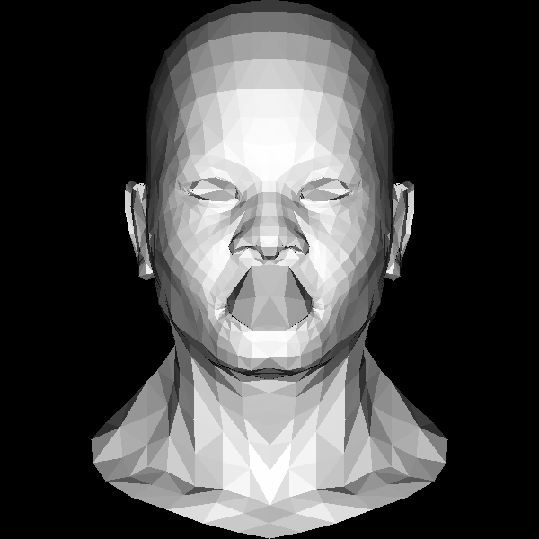
妈妈他是凸嘴。我们换一个光的方向。
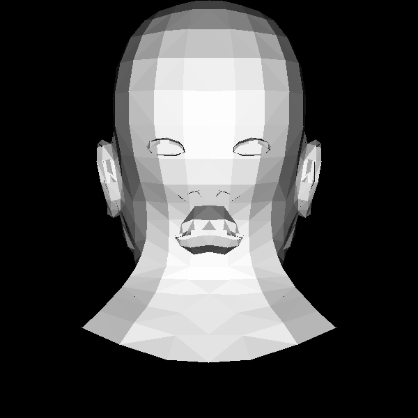
更吓人了。。。。他嘴巴怎么长后面了。。
compile & run：
$ g++ -std=c++11 main.cpp tgaimage.cpp model.cpp -o main
$ ./main造成这个问题的原因很简单，我们就是一股脑的把三角形画出来了，没有考虑三角形的先后顺序，正如画画一样，我们应该先画远处的东西，如果近处有什么东西把它给覆盖了，我们就不会看到远处的东西，这里我们就是画三角形的时候没有考虑先后顺序。那么这个问题要怎么解决呢？
这里我们先继续回顾一下三角形重心坐标：
\[ P = (1 - a/c - b/c)A + a/cB + b/cC, c \ne 0 \]
这里其实有一个很cool的点，就是我们把P表示成三角形三个顶点的线性组合，再回忆一下线性插值，其实对于P点的任何性质，我们都可以利用类似线性插值，把它变成三个顶点的组合：
\[ P_z = (1 - a/c - b/c)A_z + a/cB_z + b/cC_z, c \ne 0 \]
所以这里就给了我们提示，对于任意一点P，我们算出它的z值，如果z值更靠近我们，那么我们就用它来替换已经画上的点，否则我们则不更新P点。
同样我们也只用考虑画布上的所有的点的P值，可以用一个二维的数组来表示，不过我们这里偷懒，就用一维的数组，因为画布上的(x,y)点可以写成(x + y *width)，可以这样来转换:
int idx = x + y*width;int x = idx % width;
int y = idx / width;同时注意我们在把物体坐标系做映射时，需要保留z值，所以一些计算我们最好就用float.同时我们也需要注意在转换坐标系的时候我们需要注意还是需要把 x 和 y 变成int，否则有些地方会因为浮点数的原因for loop不会覆盖所有的像素，会有黑色部分产生：
Vec3f world2screen(Vec3f v) {
// 注意这里我们还是保留了int这个操作，因为我们的画像素的for loop要用到这个x和y
// 如果都是浮点数，那么for loop有些可能无法顺利进行
// 我们再加上0.5来四舍五入
return Vec3f(int((v.x+1.)*width/2.+.5), int((v.y+1.)*height/2.+.5), v.z);
}第二个需要注意的点是我们物体的位置和朝向，这里我们把z-buffer初始化为负无穷大，然后如果P.z更大意味更靠近我们。
void triangle(Vec3f *pts, float *zbuffer, TGAImage &image, TGAColor color) {
Vec2f bboxmin(std::numeric_limits<float>::max(),std::numeric_limits<float>::max());
Vec2f bboxmax(std::numeric_limits<float>::min(),std::numeric_limits<float>::min());
Vec2f clamp(image.get_width()-1, image.get_height()-1);
for (int i = 0; i < 3; i++) {
for (int j = 0; j < 2; j++) {
bboxmin[j] = std::max(0.f, std::min(bboxmin[j], pts[i][j]));
bboxmax[j] = std::min(clamp[j], std::max(bboxmax[j], pts[i][j]));
}
}
Vec3f P;
for (P.x = bboxmin.x; P.x <= bboxmax.x; P.x++) {
for (P.y = bboxmin.y; P.y <= bboxmax.y; P.y++) {
Vec3f bc_screen = barycentric(pts[0], pts[1], pts[2], P);
if (bc_screen.x < 0 || bc_screen.y < 0 || bc_screen.z < 0 ) continue;
P.z = 0;
for (int i=0; i<3; i++) P.z += pts[i][2]*bc_screen[i];
if (zbuffer[int(P.x+P.y*width)] < P.z) {
image.set(P.x, P.y, color);
zbuffer[int(P.x+P.y*width)] = P.z;
}
}
}
}看结果:

之前我们说有三个方向可以走 - 光、纹理、数学，我们先轻松一下，看一下纹理。
纹理其实就是贴图，比如看这个正方体，如果我们想要它有木质效果。对于它的每一面，我们给它贴上图就ok.

注意只用图的一部分也是完全ok的。
我们定义 u 和 v
\[ 0 \le u \le 1 \]
\[ 0 \le v \le 1 \]
(u, v) 会对应到图片(宽w, 高h)上的 (u(w - 1), v(h - 1))，这样定义的的好处当然很多啦， 比如我们可以随意换纹理图，还可以随意换纹理图大小...等等等。

针对每个三角形的顶点我们有 (u, v)， 同样用重心坐标系算出对于三角形的每一点的 (u, v)，然后根据这个 (u, v) 来画图。
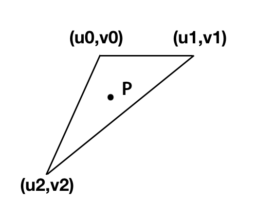
对于我们的文件，其中有:
vt 0.532 0.923 0.000这个数据就是我们三角形对应的(u, v)。
而我们之前读f的时候，丢弃了一些数据，实际上：
f 1193/1240/1193 1180/1227/1180 1179/1226/1179实际上三个数据分别是： 顶点索引/顶点法向量索引/顶点纹理索引。
我们来修改model， 给出纹理文件：'african_head_diffuse.tga'，读入纹理，然后贴上图看看，注意这里我们并没有给他加上光：
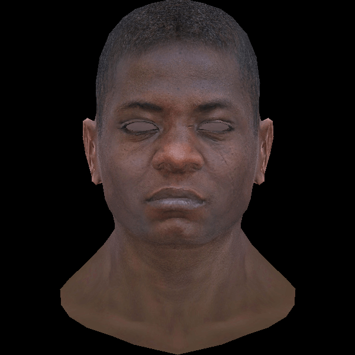
looks good!
compile & run：
$ g++ -std=c++11 main.cpp tgaimage.cpp model.cpp -o main
$ ./main之前我们说有三个方向可以走 - 光、纹理、数学。然后我们简单看了一个光的例子来学习z-buffer和纹理，现在我们来看一下相关的数学知识。这些也很重要。
需要了解的概念包括：
这部分可以参考我的一些文章
经过这些补充之后，我们需要知道的是为了变换物体位置，并且符合近大远小的原则我们最终画在屏幕上的点需要经过这些变换：
顶点 → 世界坐标系 → 摄像头坐标系 → 投影 → 屏幕坐标系
viewport * projection * view * model * vertex.这里我们简单用一点点数学，我们不动物体，但是把眼睛/摄像头放到 z = 3 的位置，头像缩小一点点，再加上透视投影。
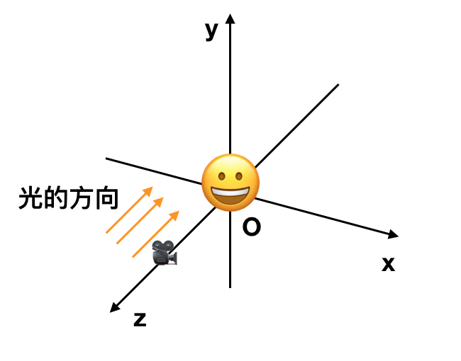
结果：
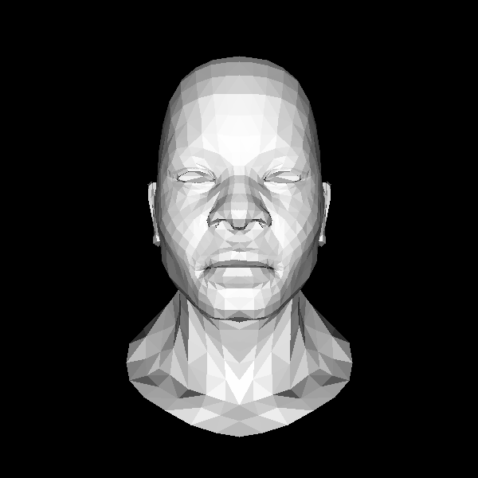
看起来不错，近大远小我们能看出来。
代码 在geometry.h 中有较大的修改，引入了矩阵类及其运算。
说起数学我们还不能逃开一些问题，比如：
在上一次计算的代码中，我们把模型的坐标\(v_x,v_y\)映射投影到了一定的区间，其实对于\(v_z\)我们也可以这样来做。这样可以更多更好的运用我们的齐次坐标，为了方便，我们可以把\(v_z\)映射到[0,255]之间，这样当然我们的 viewport 矩阵要跟着改了, d = 255:
\[ \begin{pmatrix} w/2 & 0 & 0 & x + w/2\\ 0 & h/2 & 0 & y + h/2 \\ 0 & 0 & d/2 & d/2 \\ 0 & 0 & 0 & 1 \end{pmatrix} \]
我们把\(v_z\)映射到0~255之间还有一个附加原因（好处）是因为TGAImage支持灰度图像，我们可以利用\(v_z\)生成一副灰度图像，这样更利于我们debug，同时我们也不需要再使用zbuffer数组了。
看 code 关键部分：
float z = pts[0][2]*c.x + pts[1][2]*c.y + pts[2][2]*c.z;
float w = pts[0][3]*c.x + pts[1][3]*c.y + pts[2][3]*c.z;
int frag_depth = std::max(0, std::min(255, int(z/w+.5)));
if (c.x < 0 || c.y < 0 || c.z < 0 || zbuffer.get(P.x, P.y)[0] > frag_depth ) continue;
image.set(P.x, P.y, color);
zbuffer.set(P.x, P.y, TGAColor(frag_depth));我们的zbuffer是一幅TGA图像，方便我们直接从中取值，同时z的计算我们变得更加方便了一些，我们也新增了一些几何计算的部分，比如 Vec3f - Vec3i 互相转换， Vec2f - Vec2i 互相转换。
现在compile就需要：
$ g++ -std=c++11 main.cpp tgaimage.cpp model.cpp geometry.cpp -o main
$ .\main生成的output跟之前一样，附加生成了一幅zbuffer的图像：
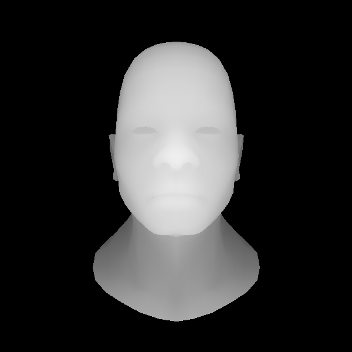
之前写过为了生成这个output，我们加了一束方向光，并做了一些假设：假设每个三角形收到光照的强度相同，都是 Icosα，法向量是我们根据三角形的边叉乘算出来的。
这种给物体上色的方式就叫做平面着色（Flat Shading)，三角形这个平面着一样的色。除了平面着色以外，我们还有别的着色方式： 高洛德着色(Gouraud shading) 和冯氏着色 (Phong shading).
高洛德着色(Gouraud shading) 跟我们处理三角形的z值差不多，算出每个顶点的颜色，然后根据重心坐标，算出三角形内每个P点的颜色，给P点上色。
至于每个顶点的颜色怎么算，别忘了我们的 wavefront file
f 1193/1240/1193 1180/1227/1180 1179/1226/1179
顶点索引/顶点法向量索引/顶点纹理索引
顶点法向量在文件中是 vn开头的数字：
vn 0.001 0.482 -0.876有了顶点法向量我们当然就可以算顶点颜色，进一步修改model文件读入更多的数据。
不同的着色方式会有不同的代码，如果我们每次都要回去修改都太麻烦了，这里我们来整理一次代码，让它靠近OpenGL，把顶点变换和着色抽象出来，变成专门的shader部分，也就是所谓的 vertex shader(顶点着色器） 和 fragment shader（片段着色器）。
我们定义一个IShader基类，所有的找色方式都继承和实现里面的 virtual method.
struct IShader {
virtual ~IShader();
virtual Vec4f vertex(int iface, int nthvert) = 0;
virtual bool fragment(Vec3f bar, TGAColor &color) = 0;
};顶点着色器主要做两件事：
片段着色器也主要做两件事：
平面着色器：
struct FlatShader: public IShader{
mat<3,3,float> varying_tri; // 用来记录transform之后的三角形
virtual Vec4f vertex(int iface, int nthvert){
Vec4f gl_Vertex = embed<4>(model->vert(iface, nthvert));
gl_Vertex = Projection*ModelView*gl_Vertex;
varying_tri.set_col(nthvert, proj<3>(gl_Vertex/gl_Vertex[3])); //记录transform后的三角形，这个在我们片段着色器决定三角形的颜色的时候使用来使用
gl_Vertex = ViewPort*gl_Vertex;
return gl_Vertex;
}
virtual bool fragment(Vec3f bar, TGAColor &color){
Vec3f n = cross(varying_tri.col(1)- varying_tri.col(0),varying_tri.col(2)-
varying_tri.col(0)).normalize(); // 计算法向量
float intensity = CLAMP(n*light_dir); // 光强度clamp到0，1之间
color = TGAColor(255,255,255)*intensity; // 计算颜色
return false;
}
};之所以我们叫这个为 varying_tri 是因为 varying是GLSL中的保留字，我们之后会再聊到它，改变一下光的方向、眼睛位置，看最终效果：

代码:
run:
$ g++ -std=c++11 main.cpp tgaimage.cpp model.cpp geometry.cpp our_gl.cpp -o main
$ ./main鉴于我们的compile越来越复杂，之后我们会开始使用makefile.
我们前面已经写过如何Gouraud shading，算出三角形每个顶点的光照，然后根据重心坐标插值上色。
那么我们首先再复习一下我们的代码，非常美妙，抽象了很多部分出来，现在如果我们需要更改着色方式，我们只需要更改 main.cpp 中的 shader部分。所以我们来更改代码，变成Gouraud着色：
struct GouraudShader: public IShader{
Vec3f varying_intensity; // write by vertex shader, read by fragment shader
virtual Vec4f vertex(int iface, int nthvert){
Vec4f gl_Vertex = embed<4>(model->vert(iface, nthvert)); // read the vertex from obj file
gl_Vertex = ViewPort*Projection*ModelView*gl_Vertex;
varying_intensity[nthvert] = CLAMP(model->normal(iface, nthvert)*light_dir); // diffuse light intensity
return gl_Vertex;
}
virtual bool fragment(Vec3f bar, TGAColor &color){
float intensity = varying_intensity * bar; //interpolate intensity for current Pixel
color = TGAColor(255,255,255)*intensity;
return false; // do not discard pixel
}
};看一下这个跟triangle函数完美的配合：
void triangle(Vec4f *pts, IShader &shader, TGAImage &image, TGAImage &zbuffer){
Vec2f bboxmin( std::numeric_limits<float>::max(), std::numeric_limits<float>::max());
Vec2f bboxmax(-std::numeric_limits<float>::max(),-std::numeric_limits<float>::max());
for (int i = 0; i < 3; i++) {
for (int j = 0; j < 2; j++) {
// x/w y/w
bboxmin[j] = std::min(bboxmin[j], pts[i][j]/pts[i][3]);
bboxmax[j] = std::max(bboxmax[j], pts[i][j]/pts[i][3]);
}
}
Vec2i P;
TGAColor color;
for (P.x = bboxmin.x; P.x <= bboxmax.x; P.x++) {
for (P.y = bboxmin.y; P.y <= bboxmax.y; P.y++) {
Vec3f c = barycentric(proj<2>(pts[0]/pts[0][3]), proj<2>(pts[1]/pts[1][3]),
proj<2>(pts[2]/pts[2][3]), P);
float z = pts[0][2]*c.x + pts[1][2]*c.y + pts[2][2]*c.z;
float w = pts[0][3]*c.x + pts[1][3]*c.y + pts[2][3]*c.z;
int frag_depth = std::max(0, std::min(255, int(z/w+.5)));
if (c.x < 0 || c.y < 0 || c.z < 0 || zbuffer.get(P.x, P.y)[0] > frag_depth ) continue;
bool discard = shader.fragment(c, color);
if (!discard) {
zbuffer.set(P.x, P.y, TGAColor(frag_depth));
image.set(P.x, P.y, color);
}
}
}
}我们把重心坐标系传入 fragment，这个坐标系会根据三个顶点的光照来计算出这个点的光照，给出对应像素的颜色。
当然也少不了我们的main函数：
GouraudShader shader;
for (int i = 0; i < model->nfaces(); i++) {
std::vector<int> face = model->face(i);
Vec4f screen_coords[3];
for (int j = 0; j < 3; j++) {
screen_coords[j] = shader.vertex(i, j); //处理每个三角形
}
triangle(screen_coords, shader, image, zbuffer);
}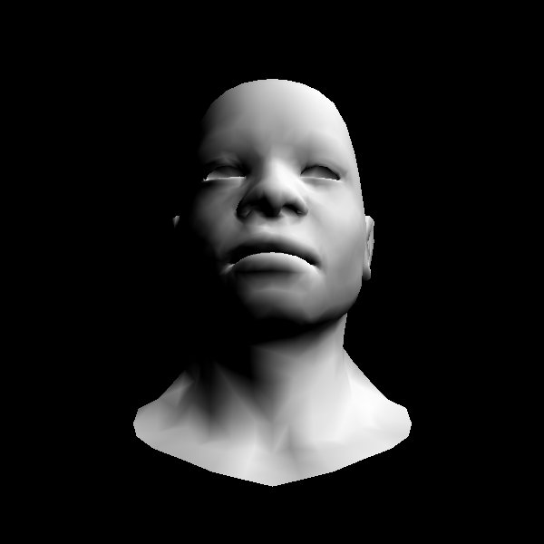
looks good.
之所以我们让fragment返回一个bool告诉我们是否需要保留pixel这个也可以用处待谈，我们也可以修改 fragment shader改变着色方式：
virtual bool fragment(Vec3f bar, TGAColor &color){
float intensity = varying_intensity * bar; //interpolate intensity for current Pixel
if (intensity > .85) intensity = 1;
else if (intensity > .60) intensity = .80;
else if (intensity > .45) intensity = .60;
else if (intensity > .30) intensity = .45;
else if (intensity > .15) intensity = .30;
else intensity = 0;
color = TGAColor(255,255,255)*intensity;
return false; // do not discard pixel
}有点卡通效果。
Gouround 着色看起来不错，但是也存在问题，就是当物体距离‘点光源’很近的时候，这个可以参考[从零开始计算机图形学]之十八Gouraud着色的缺陷部分。
Phong着色会要求更多的计算，当然也会解决Gourand着色的缺陷
先注意标题： Phong光照模型，光照模型并不是着色，不要把这个和Phong着色弄混。
我们再次来看纹理，之前我们添加纹理的时候没有加光照，没有做投影。现在我们把纹理加到我们现有的系统中：
struct Shader: public IShader{
Vec3f varying_intensity; // write by vertex shader, read by fragment shader
mat<2,3,float> varying_uv; // write by vertex shader, read by fragment shader
virtual Vec4f vertex(int iface, int nthvert){
varying_uv.set_col(nthvert, model->uv(iface, nthvert));
varying_intensity[nthvert] = CLAMP(model->normal(iface, nthvert)*light_dir); // diffuse light intensity
Vec4f gl_Vertex = embed<4>(model->vert(iface, nthvert)); // read the vertex from obj file
return ViewPort*Projection*ModelView*gl_Vertex;
}
virtual bool fragment(Vec3f bar, TGAColor &color){
float intensity = varying_intensity * bar; //interpolate intensity for current Pixel
Vec2f uv = varying_uv * bar; //interpolate uv for current Pixel
color = model->diffuse(uv)*intensity;
return false; // do not discard pixel
}
};最终效果：

有了这张纹理图，我们就可以根据插值法得到每一个像素的纹理。不禁让人思考，除了纹理，我们还可以把什么也存在图像中呢？答案是-很多：颜色、方向甚至温度。
这张图，如果我们把RGB值翻译成 xyz，那么这张图会给我们每个pixel的法向量值。这样就不仅仅是顶点的法向量了。

我们像加载法向量，修改shader，再次生成图像：
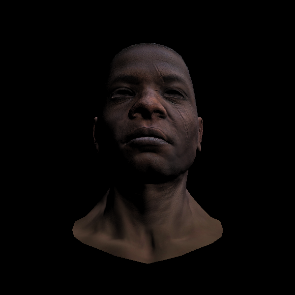
看起来更加生动,看核心代码，我们读入了每个像素的法向量，根据每个像素做计算，这里也用到了之前写的法向量变换。
struct Shader: public IShader{
mat<2,3,float> varying_uv; // write by vertex shader, read by fragment shader
mat<4,4,float> uniform_M; //Projection*ModelView
mat<4,4,float> uniform_MIT; // (Projection*ModelView).invert_transpose()
virtual Vec4f vertex(int iface, int nthvert){
varying_uv.set_col(nthvert, model->uv(iface, nthvert));
Vec4f gl_Vertex = embed<4>(model->vert(iface, nthvert)); // read the vertex from obj file
return ViewPort*Projection*ModelView*gl_Vertex; // transform to screen coords
}
virtual bool fragment(Vec3f bar, TGAColor &color){
Vec2f uv = varying_uv*bar; //interpolate uv for current Pixel
Vec3f n = proj<3>(uniform_MIT*embed<4>(model->normal(uv))).normalize(); // transform normal vector
Vec3f l = proj<3>(uniform_M *embed<4>(light_dir)).normalize(); // transfrom light direction
float intensity = std::max(0.f, n*l);
color = model->diffuse(uv)*intensity; //uv
return false; // do not discard pixel
}
};还需要注意的是从图像中颜色我们用的是TGAColor，它的顺序是bgra.具体的可以看一下在model中新增的normal函数.
Phong提出我们可以把最终光的效果看为：
环境 + 漫反射 + 镜面 = Phong

其实光我们也可以分模型：环境光、方向光、点光源。
specular light 具体的计算式子是：
\[ I_s = I_L(\frac{\overrightarrow{N} \cdot \overrightarrow{V}}{|\overrightarrow{N}| |\overrightarrow{V}|})^s \]
所有的光加起来的公式是：
\[ I = I_A + \sum I_D\frac{I_D \cdot \overrightarrow{N}}{|I_D||\overrightarrow{N}|} + \sum I_L(\frac{\overrightarrow{N} \cdot \overrightarrow{V}}{|\overrightarrow{N}| |\overrightarrow{V}|})^s \]
完整的关于这个式子推理可见：
我们同样用一幅图来表示图中每个像素所在点的反射（镜面）系数。加载上镜面系数，看最终结果：
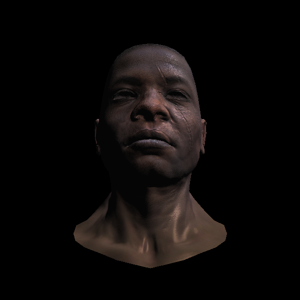
可以看到右侧脸，脖子还是有比较明显的‘镜面高光’效果。cool.
核心代码:
struct Shader: public IShader{
mat<2,3,float> varying_uv; // write by vertex shader, read by fragment shader
mat<4,4,float> uniform_M; //Projection*ModelView
mat<4,4,float> uniform_MIT; // (Projection*ModelView).invert_transpose()
virtual Vec4f vertex(int iface, int nthvert){
varying_uv.set_col(nthvert, model->uv(iface, nthvert));
Vec4f gl_Vertex = embed<4>(model->vert(iface, nthvert)); // read the vertex from obj file
return ViewPort*Projection*ModelView*gl_Vertex; // transform to screen coords
}
virtual bool fragment(Vec3f bar, TGAColor &color){
Vec2f uv = varying_uv*bar; //interpolate uv for current Pixel
Vec3f n = proj<3>(uniform_MIT*embed<4>(model->normal(uv))).normalize(); // transform normal vector
Vec3f l = proj<3>(uniform_M *embed<4>(light_dir)).normalize(); // transfrom light direction
Vec3f r = (n*(n*l*2.f) - l).normalize(); // reflected light
float spec = pow(std::max(r.z, 0.0f), model->specular(uv)); // we're looking from z-axis,
float diff = std::max(0.f, n*l);
TGAColor c = model->diffuse(uv);
color = c;
for (int i = 0; i < 3; i++) color[i] = std::min<float>(5+c[i]*(diff+.6*spec),255);
return false; // do not discard pixel
}
};这里的fragment shader中我们增加了r作为镜面反射光，然后镜面系数是从图像中读出，同样，我们也只会取大于0的部分。
for (int i = 0; i < 3; i++) color[i] = std::min<float>(5+c[i]*(diff+.6*spec),255); \\5 是环境光，
\\diff， spec*0.6这里有点随意分配的意思（一般来说我们所有光的强度加在一起最好不要超过1)，
\\然后最大值是255，毕竟颜色不能超过这里。